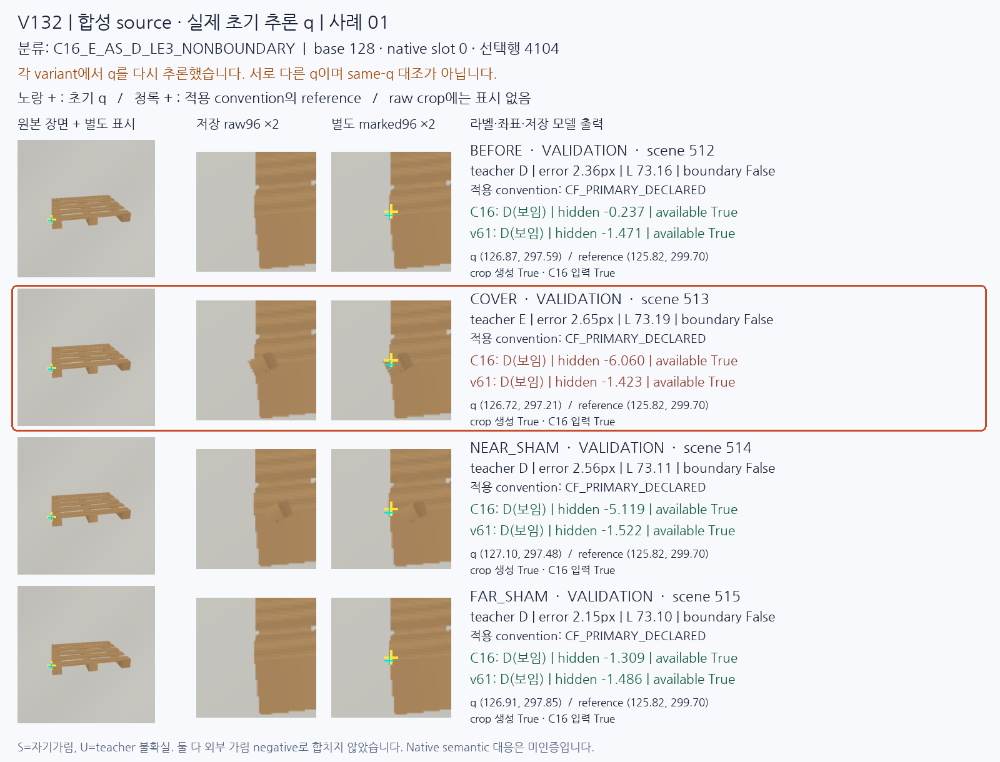
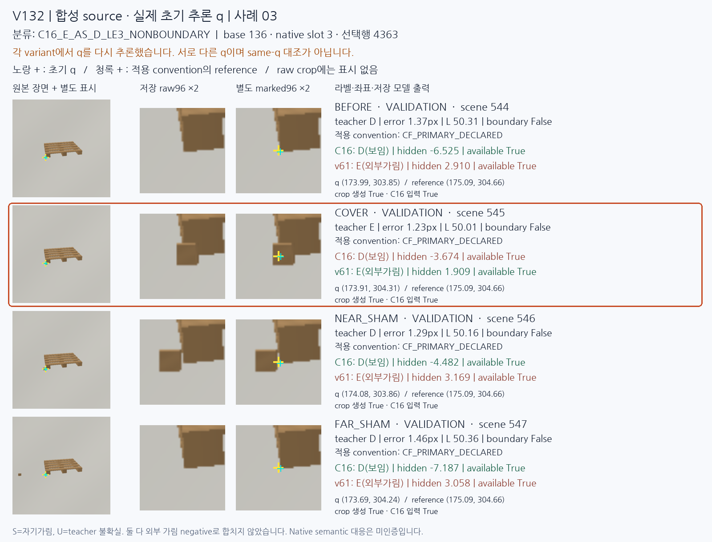
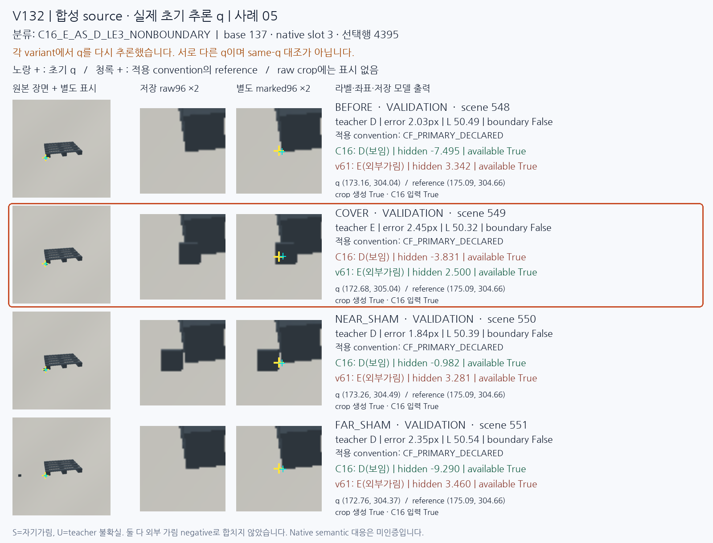
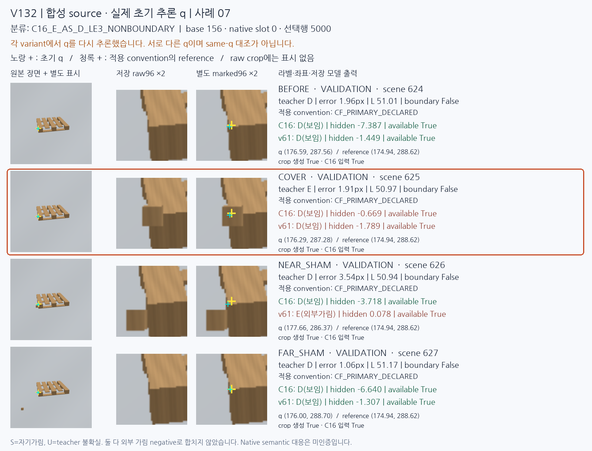

C16은 보이는 점을 잘 보존하지만, 팔레트와 같은 재질로 렌더링한 외부 물체가 코너를 덮는 경우를 놓쳤다. 이 실패가 실제 초기 추론 좌표를 사용하는 합성에서도 나타났다. 문제는 아직 해결되지 않았다.
기존 합성 768장·192base에 원래 동결 키포인트 추론기를 실행했다. 원래 6144슬롯 중 무검출 56개와 유한 화면 밖 좌표 32개를 모두 보존했다. C16·v61에는 같은 원좌표를 공급했고, C23은 같은 저장 특징으로 비교했다. C16의 원점수 6088개와 예측 6144개는 정확히 재현됐다. 모든 모델 실행은 종료됐다.
검증 대상은 64base의 256장·2048슬롯이며 teacher D828/E60/S320/U840이다. S와 teacher U는 외부 가림 이진 평가에서 분리한다. 아래 recall은 예측 U 4개도 D/E 원분모 888개에 포함한다. 각 base의 네 변형은 서로 상관된 사례다.
| 모델 | CM: 행 D/E, 열 D/E/U | D recall | E precision | E recall | D/E 보류율 |
|---|---|---|---|---|---|
| C16 | [[819, 6, 3], [46, 13, 1]] | 98.9% | 68.4% | 21.7% | 0.45% |
| C23 | [[638, 187, 3], [7, 52, 1]] | 77.1% | 21.8% | 86.7% | 0.45% |
| v61 | [[158, 667, 3], [7, 52, 1]] | 19.1% | 7.2% | 86.7% | 0.45% |
C16은 좌표 오차 3px 이하의 가림 16개 중 8개만 찾았다. 코너 대응 경계의 22base를 제외한 3px 이하 조건에서도 가림 5/12, 보임 293/293이다. C23은 가림 52/60을 찾지만 보이는 점 187개를 가림으로 오판한다.
C16의 가림 검출은 같은 재질 0/16, 배경과 유사한 색 1/14, 골판지색 6/16, 높은 대비 6/14였다. 주변에 팔레트와 비슷한 모양·재질이 남는 경우에 약하다. 특정 코너의 구조와 대상 소유권을 구별하는 데 필요한 정보가 부족하다는 가설을 다음 대조 실험에서 검증한다.
기존의 정확한 reference 좌표를 쓴 합성 조건에서도 C16은 가림 29/60만 찾았다. 현재 실제 q에서는 13/60이다. 초기 입력 오차만으로 전체 실패를 설명할 수 없다. 이 비교는 q8·L·context도 함께 달라지므로 단일 좌표의 독립 인과 실험은 아니다. 문턱만 바꾸는 사후 진단에서 두 class recall의 최솟값 최선도 76.7%였다. 실제 문턱은 유지했다.
각 panel은 BEFORE/COVER/NEAR_SHAM/FAR_SHAM을 모두 보여준다. variant마다 초기 q를 다시 추론했으므로 same-q 대조가 아니다. 각 행 두 번째 열의 raw96은 저장 모델 입력 그대로다. 노랑 q·청록 reference 표시는 세 번째 열의 별도 사본에만 추가했다. 먼저 선택된 네 개의 서로 다른 base를 보여주며, 전체 8개 선택 panel도 아래 링크에 보존했다.




기존 CF를 주분석으로 미리 고정했다. 역사적 V4와 다른 22개 VAL base는 별도 민감도 분석에 남겼고, 더 잘 나온 순서를 선택하지 않았다. native의 의미상 대응을 새 사람 정답으로 인증한 것은 아니다.
다음 실험은 현재 DINO 특징과 자료를 유지한 채 초기 q8의 native 채널·상대 배치·valid·extent를 넣는 작은 head와 같은 파라미터의 geometry0 대조다. 이전 geometry 요소를 현재 teacher와 실제 q에서 다시 검증하는 실험이며, 새 학습 전에 회귀·채택 기준을 고정한다. 현재 실사는 계속 평가 전용으로 유지한다.